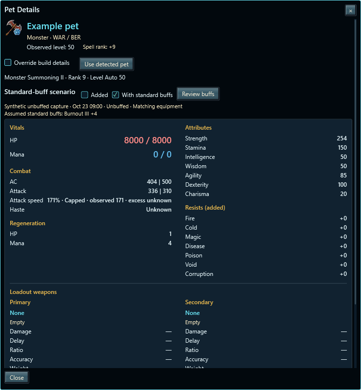
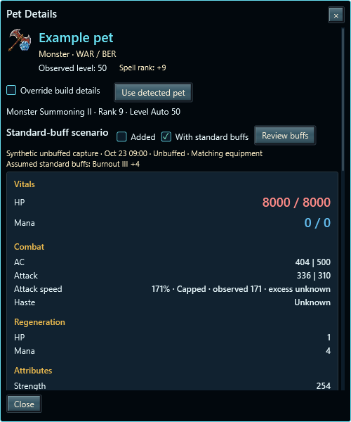

With standard buffs switches to a clearly labeled scenario. Sustained buffs are learned from confirmed player-to-owned-pet effects; Review buffs retains exclusions and rank overrides. Frenzied Burnout stays separate.


Added remains gear-only. Exact captures take priority; uncaptured Burnout III and Verses of Victory ranks use the scoped estimate. Unsupported display conversions and stacking remain explicit. Cap hints do not change equipment ratings.
15 focused core checks, 235 Pet-related regressions, 28 spell-related regressions and 11 popup checks pass. Test groups overlap. The public configuration keeps private research disabled. Broad theme/DPI matrices remain deferred.
All preview data is synthetic. Personal observations and measured combat phases stay outside the payload.